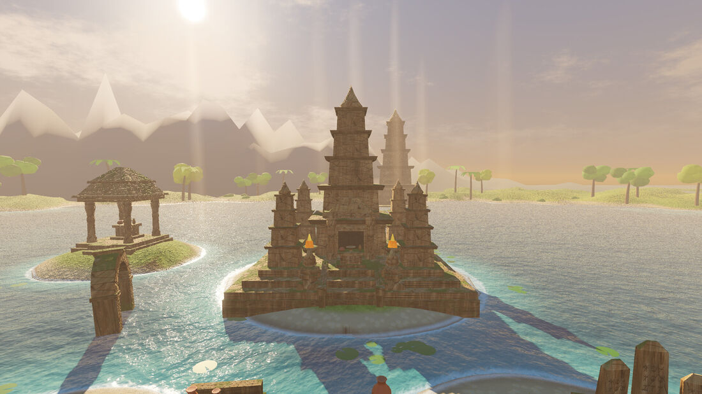

3D Snake
Snake, seen from behind the serpent’s head. Guide a living snake across lakeside island sanctuaries with real relief — hills, walled stone terraces and paved ramps — in a world where every model, texture, sound and note of music is generated by code.
Le jeu du serpent, vu de derrière la tête de l’animal. Guidez un serpent vivant sur des îles-sanctuaires au bord d’un lac, avec un vrai relief — collines, terrasses de pierre murées et rampes pavées — dans un monde où chaque modèle, texture, son et note de musique est généré par du code.

An old game, on real ground.
The rules are the ones everybody knows: eat to grow, and do not hit anything — least of all yourself. What changes is where it happens. The serpent glides over rolling hills and climbs paved ramps onto raised stone terraces, and food appears up there too. Any slope steeper than about 39° — the terrace walls — is a wall, and ends the run as surely as a pillar.
Every six sunfruit lifts you one stage, up to fourteen: the snake gets faster and monoliths rise out of the ground to close the paths you were counting on. A stamina-fuelled boost gets you out of trouble, or into it sooner.
Chain it, graze it, bank it.
| Pickup or feat | Reward |
|---|---|
| Sunfruit | 10 points, and the serpent grows |
| Surge crystal | 25 points, then double points and extra speed for 5 seconds |
| Violet relic | 150 points — rare |
| Combo | Pickups within 3.2 s of each other build a multiplier, up to ×3 |
| Close Call | A bonus for grazing an obstacle without touching it |
Score, length and stage milestones unlock 13 more serpent skins and 8 more sanctuaries, each one an island of its own with its terraces, hills, shores and monuments: Golden Dawn, Moonlit Shrine, Misty Morning, Crimson Dusk, Jade Monsoon, Silver Frost, Turquoise Lagoon, Amber Autumn and Violet Aurora.
What is in the game.
Entirely procedural
Models, textures, sound effects and music all come out of generator scripts kept in the repository. The only third-party assets are the fonts.
Three ways to steer
Slide a finger anywhere on the screen, hold the left or right half, or use a floating joystick. Sensitivity, left-handed layout, camera distance and smoothing are adjustable; keyboards and gamepads work too.
Accessibility
Reduced motion turns off camera shake, banking, the boost zoom and speed lines. In-game text can be drawn 1.3× larger, the danger glow can switch from red to blue or yellow, and off-screen markers differ by shape, not only by colour.
18 languages
From English, French and Khmer to Thai, Vietnamese, Hindi, Japanese, Korean and Chinese, picked from the phone’s language on first launch. Fonts are cut down to the characters actually used: about 0.7 MB instead of 50 MB.
Weather and seasons
Rain on Jade Monsoon, snow and frosted trees on Silver Frost, orange and red leaves on Amber Autumn, braziers burning through the Violet Aurora night.
A safe profile
Settings, statistics, high scores and unlocks are saved in a player profile; an unreadable file is backed up and the game starts fresh rather than crashing.
Un vieux jeu, sur un vrai terrain.
Les règles sont celles que tout le monde connaît : manger pour grandir, et ne rien heurter — surtout pas soi-même. Ce qui change, c’est le décor. Le serpent glisse sur des collines et grimpe par des rampes pavées sur des terrasses de pierre surélevées, où la nourriture apparaît aussi. Toute pente de plus de 39° environ — les murs des terrasses — est un mur, et met fin à la partie aussi sûrement qu’un pilier.
Tous les six fruits, on monte d’une étape, jusqu’à quatorze : le serpent accélère et des monolithes sortent du sol pour fermer les passages sur lesquels on comptait. Une accélération, alimentée par l’endurance, permet de se tirer d’affaire — ou de s’y mettre plus vite.
Enchaîner, frôler, engranger.
| Objet ou exploit | Récompense |
|---|---|
| Fruit solaire | 10 points, et le serpent grandit |
| Cristal Surge | 25 points, puis points doublés et vitesse accrue pendant 5 secondes |
| Relique violette | 150 points — rare |
| Combo | Des ramassages à moins de 3,2 s d’intervalle font monter un multiplicateur, jusqu’à ×3 |
| Close Call | Un bonus pour avoir frôlé un obstacle sans le toucher |
Les paliers de score, de longueur et d’étape débloquent 13 autres apparences de serpent et 8 autres sanctuaires, chacun étant une île à part entière avec ses terrasses, ses collines, ses rivages et ses monuments : Golden Dawn, Moonlit Shrine, Misty Morning, Crimson Dusk, Jade Monsoon, Silver Frost, Turquoise Lagoon, Amber Autumn et Violet Aurora.
Ce qu’il y a dans le jeu.
Entièrement procédural
Modèles, textures, bruitages et musiques sortent tous de scripts générateurs conservés dans le dépôt. Les seules ressources externes sont les polices.
Trois façons de diriger
Glisser un doigt n’importe où sur l’écran, maintenir la moitié gauche ou droite, ou utiliser un joystick flottant. Sensibilité, disposition pour gaucher, distance et lissage de la caméra sont réglables ; clavier et manette fonctionnent aussi.
Accessibilité
Le mode « mouvements réduits » coupe les secousses de caméra, l’inclinaison dans les virages, le zoom d’accélération et les lignes de vitesse. Le texte en jeu peut être agrandi 1,3 fois, la lueur de danger peut passer du rouge au bleu ou au jaune, et les repères hors écran se distinguent par leur forme, pas seulement par leur couleur.
18 langues
De l’anglais, du français et du khmer au thaï, au vietnamien, à l’hindi, au japonais, au coréen et au chinois, choisies d’après la langue du téléphone au premier lancement. Les polices sont réduites aux caractères réellement utilisés : environ 0,7 Mo au lieu de 50 Mo.
Météo et saisons
La pluie sur Jade Monsoon, la neige et les arbres givrés sur Silver Frost, les feuilles orange et rouges d’Amber Autumn, les braseros dans la nuit de Violet Aurora.
Un profil protégé
Réglages, statistiques, meilleurs scores et déblocages sont enregistrés dans un profil joueur ; un fichier illisible est mis de côté et le jeu repart de zéro plutôt que de planter.
Six sanctuaries, one serpent.Six sanctuaires, un serpent.
How it is built.
| Engine | Godot 4.7 and GDScript. A single entry scene; everything else is built in code. |
| Renderer | Godot’s Mobile renderer on Vulkan, falling back to OpenGL ES 3 on devices without a usable Vulkan driver. |
| Snake | A simulation with a spine path buffer, and a GPU-skinned body that follows the ground over hills and up ramps. |
| World | A seeded island generator: terrain and relief, obstacles, meshes and themes. |
| Camera | A chase camera with intro, chase, death, menu and showcase modes. |
| Tests | A headless test runner; the suites fail if a translation key or a character is missing, or if a text is too long for its screen. |
| Platform | Android 7.0 and later, arm64, landscape. Version 2.0.0. |
Comment c’est construit.
| Moteur | Godot 4.7 et GDScript. Une seule scène d’entrée ; tout le reste est construit par le code. |
| Rendu | Le moteur de rendu Mobile de Godot sur Vulkan, avec repli sur OpenGL ES 3 quand l’appareil n’a pas de pilote Vulkan utilisable. |
| Serpent | Une simulation avec tampon de trajectoire de la colonne, et un corps animé sur le GPU qui épouse le sol, sur les collines comme sur les rampes. |
| Monde | Un générateur d’îles à graine : terrain et relief, obstacles, maillages et thèmes. |
| Caméra | Une caméra de poursuite avec des modes introduction, poursuite, mort, menu et vitrine. |
| Tests | Un lanceur de tests sans affichage ; les suites échouent si une clé de traduction ou un caractère manque, ou si un texte est trop long pour son écran. |
| Plateforme | Android 7.0 et suivants, arm64, paysage. Version 2.0.0. |